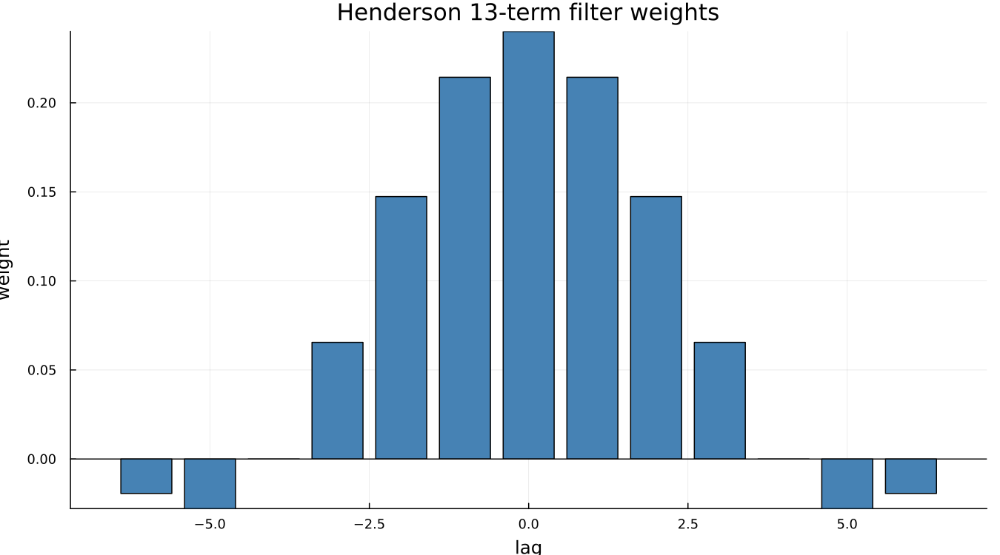
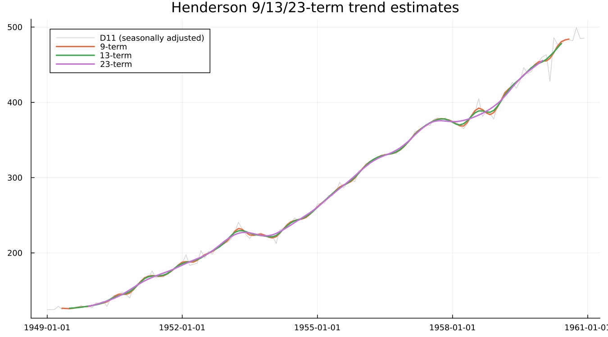
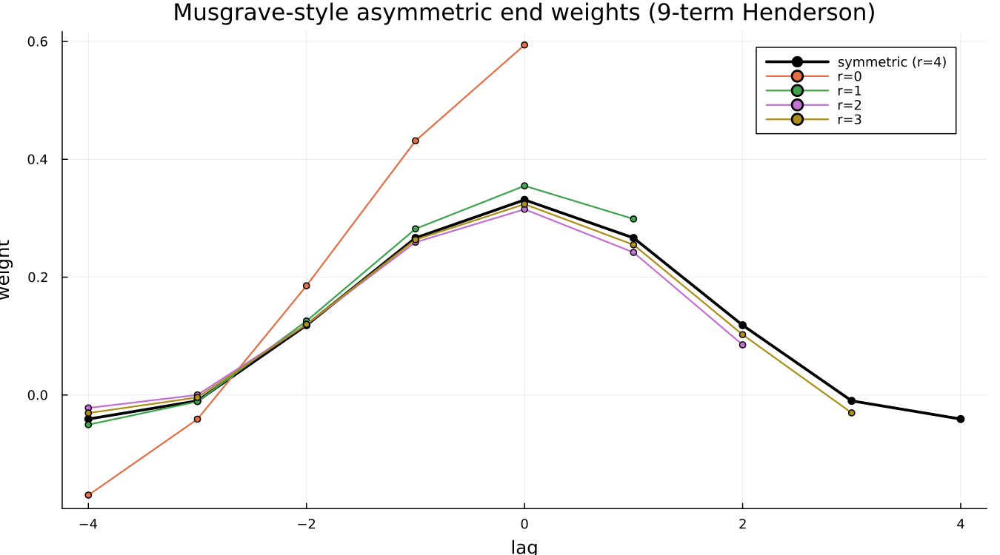

5. Trend Filters
5.1 Moving averages: the centring problem
A 12-term average of monthly data spans a whole year, which is exactly the point — average across a full cycle and the seasonal pattern cancels out. But twelve is even, so a plain 12-term average centred on any single month does not exist: there is no middle point. X-11's fix is a 2×12 average — average two consecutive 12-term averages — which centres correctly on an observation and is what Chapter 4's toy filter actually computed.
5.2 Henderson's criterion
A moving average is a blunt instrument: it treats every point in its window equally and has no opinion about the shape of the trend it is smoothing. Henderson's filter is sharper. It is the filter — for a given odd length — that minimises the roughness of the smoothed output (the sum of squared third differences of the result) while still reproducing a cubic polynomial exactly. Chosen well, it follows genuine curvature in the trend without chasing every wiggle in the irregular.

Two things are worth noticing in the shape. The weights are symmetric, and the outermost ones are negative. A plain moving average cannot do that — it can only blur a peak. A small negative weight at the edges allows a Henderson filter to sharpen a turning point instead, correcting for the bias a positive-only average would introduce near curvature.
5.3 Length matters
Applying the 9-, 13- and 23-term Henderson filters to the same seasonally adjusted series makes the tradeoff visible directly:

Longer means smoother and slower to react — the 23-term line cuts cleanly through short-lived wiggles the 9-term line still follows. Neither is "better" in the abstract; the right length depends on how much of the short-term movement in the series is genuine signal versus irregular noise.
5.4 Choosing the length automatically
X-13 picks the Henderson length from the I/C ratio — how large the irregular component is relative to the trend's own movement. A noisier series is given a longer, more aggressively smoothing filter; a cleaner one keeps a shorter, more responsive filter. For airline, filters reports the choice directly rather than requiring it to be inferred: trend_ma = 9. This should be read back rather than assumed, since the same series under a different spec may select a different length.
5.5 The ends
The filters above are all symmetric — they require observations on both sides of the point being estimated. At the two ends of any real series, half of that window does not yet exist, and X-13 substitutes an asymmetric filter built from the same Henderson criterion, using only the data actually available:

As fewer future points are available (r falling from 4 toward 0), the filter concentrates progressively more weight on the most recent observed point rather than spreading it symmetrically. This is Chapter 9's entire subject — the asymmetric filter is a reasonable substitute for the symmetric one, not a flawed approximation of it, and the two figures there show precisely what it costs and what forecast extension buys back.
Under the hood — Musgrave's asymmetric weights, and an honest limit
The weights shown above are a transparent reconstruction of Musgrave's (1964) underlying idea, not a byte-exact reproduction of X-13's own internal computation: among all filters supported on the available lags that still reproduce a local linear trend exactly, find the one closest in squared distance to the symmetric Henderson weights truncated to the same support. No output table this package can read back exposes X-13's actual applied end-filter coefficients, so an exact comparison is not possible with what is available — a real, stated limit rather than a silently assumed match. What is verified directly: the weights sum to 1 (preserving the series' level) and grow more skewed toward the most recent point as fewer future observations remain, which is the qualitative shape every source describes. Ladiray & Quenneville give the full Musgrave derivation this reconstruction is built in the spirit of.
See also: Chapter 4 for why a Henderson filter is a refinement of, rather than a replacement for, the plain moving average. Chapter 9 for what the asymmetric filters cost in practice, with real numbers.